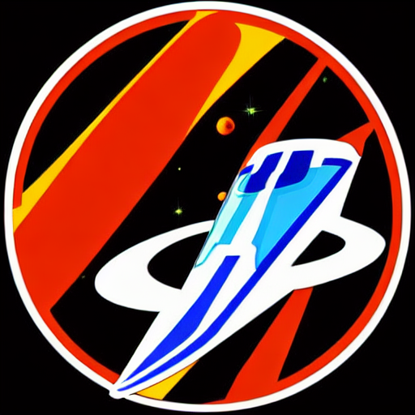

star_half AstroDynamics

Eredmények: 12 bajnoki cím és számtalan futamgyőzelem. Az AstroDynamics technológiai innovációi – különösen az ionhajtómű-fejlesztések – legendássá tették őket.
Bajnok/Futtam győzelem
rewarded_ads: 12
sports_score: 36
sports_motorsports Pilóták
domain Alapítás:
2341-ben alapították, és azóta a Csillagközi Száguldás meghatározó csapata.